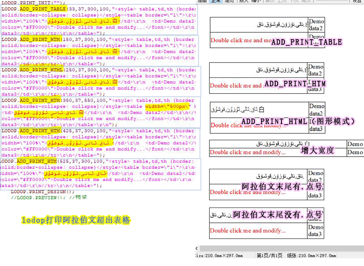

lodop打印阿拉伯文超出表格
阿拉伯文或阿拉伯文和汉字方式，lodop打印输出时，由于超文本解析问题，可能会出现超出表格的情况。
1.换成LODOP.ADD_PRINT_HTML（图形模式）输出，这种能更好的还原样式，但是清晰度不如LODOP.ADD_PRINT_HTM（普通模式），如果可以接受该语句的清晰度或是高精度的打印机，可以换成这个图形模式的语句。
2.加大该单元格的宽度，让内容可以显示完全，不用宽度自适应表格内容那种方式。
3.测试发现如果阿拉伯文末尾没有点.类符号，是不会超出表格的。
测试结果：
ADD_PRINT_TABLE超出单元格
ADD_PRINT_HTM超出单元格
ADD_PRINT_HTML正常，但清晰度比如HTM（不超出）
ADD_PRINT_HTM增大单元格宽度，把超出部分也容纳进去（不超出）
ADD_PRINT_HTM，纯阿拉伯文末尾有点.号
ADD_PRINT_HTM，纯阿拉伯文末尾没有点.号（不超出）
测试代码：
<script language="javascript" src="LodopFuncs.js"></script> <title>阿拉伯文超出表格</title> </head> <body> <a href="javascript:prn1_preview()">测试阿拉伯文超出表格</a><br> <script language="javascript" type="text/javascript"> var LODOP; //声明为全局变量 function prn1_preview() { LODOP=getLodop(); LODOP.PRINT_INIT(""); LODOP.ADD_PRINT_TABLE(33,37,300,100,"<style> table,td,th {border: 1px solid black;border-style: solid;border-collapse: collapse}</style><table border=\"1\">
\r\n
<tr>\r\n <td width=\"100%\">ئاق.ئالى.ئۇزۇن.قوشۇق.白</td>\r\n <td>Demo data2</td>\r\n</tr>\r\n<tr>\r\n <td><font color=\"#FF0000\">Double click me and modify...</font></td>\r\n <td>Demo data3</td>\r\n</tr>\r\n</table>"); LODOP.ADD_PRINT_HTM(150,37,300,100,"<style> table,td,th {border: 1px solid black;border-style: solid;border-collapse: collapse}</style><table border=\"1\">
\r\n<tr>\r\n <td width=\"100%\">ئاق.ئالى.ئۇزۇن.قوشۇق.白</td>\r\n <td>Demo data2</td>\r\n</tr>\r\n<tr>\r\n <td><font color=\"#FF0000\">Double click me and modify...</font></td>\r\n <td>Demo data3</td>\r\n</tr>\r\n</table>"); LODOP.ADD_PRINT_HTML(250,37,300,100,"<style> table,td,th {border: 1px solid black;border-style: solid;border-collapse: collapse}</style><table border=\"1\">
\r\n<tr>\r\n <td width=\"100%\">ئاق.ئالى.ئۇزۇن.قوشۇق.白</td>\r\n <td>Demo data2</td>\r\n</tr>\r\n<tr>\r\n <td><font color=\"#FF0000\">Double click me and modify...</font></td>\r\n <td>Demo data3</td>\r\n</tr>\r\n</table>"); LODOP.ADD_PRINT_HTM(350,37,550,100,"<style> table,td,th {border: 1px solid black;border-style: solid;border-collapse: collapse}</style><table width=\"500px\" border=\"1\">\r\n
<tr>\r\n <td>ئاق.ئالى.ئۇزۇن.قوشۇق.白</td>\r\n <td>Demo data2</td>\r\n</tr>\r\n<tr>\r\n <td><font color=\"#FF0000\">Double click me and modify...</font></td>\r\n <td>Demo data3</td>\r\n</tr>\r\n</table>\r\n"); LODOP.ADD_PRINT_HTM(425,37,300,100,"<style> table,td,th {border: 1px solid black;border-style: solid;border-collapse: collapse}</style><table border=\"1\">
\r\n<tr>\r\n <td width=\"100%\">ئاق.ئالى.ئۇزۇن.قوشۇق.</td>\r\n <td>Demo data2</td>\r\n</tr>\r\n<tr>\r\n <td><font color=\"#FF0000\">Double click me and modify...</font></td>\r\n <td>Demo data3</td>\r\n</tr>\r\n</table>"); LODOP.ADD_PRINT_HTM(525,37,300,100,"<style> table,td,th {border: 1px solid black;border-style: solid;border-collapse: collapse}</style><table border=\"1\">
\r\n<tr>\r\n <td width=\"100%\">ئاق.ئالى.ئۇزۇن.قوشۇق</td>\r\n <td>Demo data2</td>\r\n</tr>\r\n<tr>\r\n <td><font color=\"#FF0000\">Double click me and modify...</font></td>\r\n <td>Demo data3</td>\r\n</tr>\r\n</table>"); LODOP.PRINT_DESIGN(); //LODOP.PREVIEW(); //预览 }; </script>
图示：
